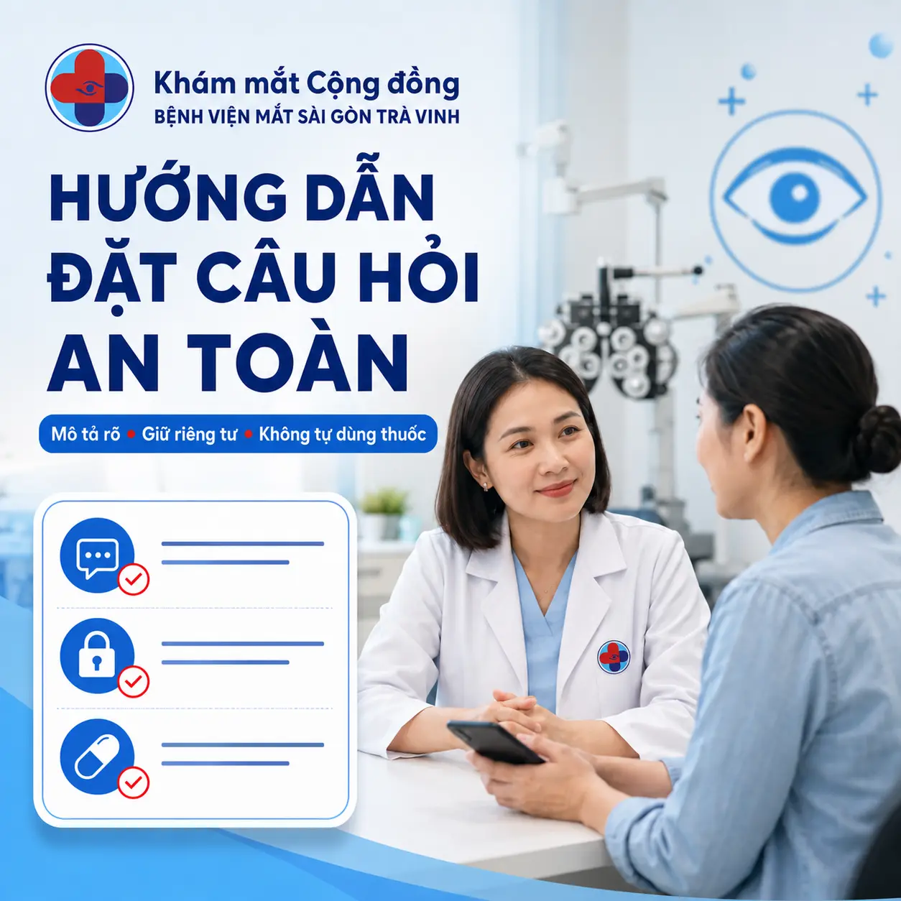

01/03
Kiến thức dễ hiểu
Nội dung chăm sóc mắt được trình bày ngắn gọn, thực tế và phù hợp với người dân địa phương.
Biên soạn có trách nhiệm
Cộng đồng sức khỏe mắt tại Trà Vinh
Nơi người dân chia sẻ kiến thức, đặt câu hỏi an toàn và kết nối với thông tin chuyên khoa từ Bệnh viện Mắt Sài Gòn Trà Vinh.
Miễn phí tham gia · Nội dung dễ hiểu · Tôn trọng quyền riêng tư

Nền tảng cộng đồng tin cậy
Chúng tôi xây dựng không gian trao đổi văn minh, giúp thành viên hiểu vấn đề của mình rõ hơn mà không biến bình luận thành nơi chẩn đoán hay kê đơn trực tuyến.
Nội dung chăm sóc mắt được trình bày ngắn gọn, thực tế và phù hợp với người dân địa phương.
Thành viên được hướng dẫn mô tả triệu chứng, bảo vệ thông tin cá nhân và nhận biết khi nào cần đi khám.
Cộng đồng được đồng hành bởi Bệnh viện Mắt Sài Gòn Trà Vinh và hệ thống thông tin chính thức.
Trung tâm kiến thức mắt
Nội dung được tổ chức theo nhu cầu thường gặp để thành viên dễ tìm, dễ hiểu và biết bước tiếp theo phù hợp.
Hướng dẫn hỏi an toàn06 chủ đề thiết thực · Dễ tìm hiểu · Ưu tiên an toàn
Nhận biết dấu hiệu, thời điểm nên khám và cách chuẩn bị cho người lớn tuổi.
Cận thị, viễn thị, loạn thị và thói quen bảo vệ mắt cho trẻ em, người trưởng thành.
Chăm sóc mắt khi dùng điện thoại, máy tính hoặc làm việc trong môi trường điều hòa.
Đái tháo đường, tăng huyết áp và những nguy cơ thường gặp của bệnh võng mạc.
Bệnh có thể tiến triển âm thầm — kiểm tra mắt định kỳ giúp phát hiện nguy cơ sớm.
Vệ sinh mắt, sử dụng kính, dinh dưỡng và phòng ngừa chấn thương mắt.
Dấu ấn vì cộng đồng
Những chương trình khám, tư vấn và hỗ trợ điều trị mắt nhân đạo được cập nhật từ các nguồn báo chí và hình ảnh hoạt động thực tế.
Dữ liệu được cập nhật từ kho nội dung chính thức của chương trìnhBáo chí đồng hành
Chạm vào từng nội dung để đọc bài viết đầy đủ tại trang báo phát hành.
Thư viện hình ảnh
Chọn khu vực để xem các thư mục hình ảnh hoạt động. Ảnh mới được thêm vào Google Drive sẽ tự động xuất hiện tại đây.
Hướng dẫn thành viên
Chỉ chia sẻ thông tin cần thiết. Không đăng họ tên đầy đủ, số điện thoại, địa chỉ, mã hồ sơ hoặc đơn thuốc chưa che thông tin cá nhân.
Mắt trái, mắt phải hay cả hai; đau, đỏ, ngứa, cộm hoặc nhìn mờ.
Xuất hiện từ khi nào, đột ngột hay từ từ, đang giảm hay nặng hơn.
Độ tuổi, bệnh nền, kính áp tròng, chấn thương và thuốc đang sử dụng.
Không chờ trả lời trong nhóm
Bình luận trên mạng không thay thế cấp cứu. Khi có một trong các dấu hiệu sau, hãy đến cơ sở y tế gần nhất.
Thông tin an toàn đối chiếu từ National Eye Institute và NHS.
Rửa ngay bằng nhiều nước sạch liên tục ít nhất 20 phút và tìm hỗ trợ y tế. Không chờ phản hồi trong nhóm.
Đơn vị đồng hành
Bệnh viện chuyên khoa mắt phục vụ người dân Trà Vinh và khu vực lân cận, với định hướng chăm sóc toàn diện, thiết bị chuyên khoa và quy trình khám thuận tiện.
Trung tâm hỗ trợ
Những nguyên tắc quan trọng giúp cộng đồng trao đổi hiệu quả, an toàn và tôn trọng quyền riêng tư.
Nhóm dành cho người dân quan tâm đến sức khỏe mắt, người đang chăm sóc trẻ em hoặc người lớn tuổi và những ai muốn tìm hiểu kiến thức chăm sóc mắt an toàn tại khu vực Trà Vinh và lân cận.
Không. Bài viết và bình luận trong nhóm chỉ mang tính tham khảo, không thay thế việc khám trực tiếp, đo thị lực và thực hiện các kiểm tra chuyên khoa cần thiết.
Hãy nêu độ tuổi, mắt gặp vấn đề, triệu chứng, thời điểm xuất hiện, diễn tiến, bệnh nền và thuốc đang sử dụng. Không đăng họ tên đầy đủ, số điện thoại, địa chỉ hoặc hồ sơ có thông tin cá nhân.
Hãy đến cơ sở y tế gần nhất khi bị giảm thị lực đột ngột, đau mắt dữ dội, chấn thương hoặc hóa chất vào mắt, hoặc đột ngột thấy nhiều chớp sáng, chấm đen và màn tối che trước mắt.
Bệnh viện tại số 430 đường Nguyễn Đáng, Khóm 7, Phường Nguyệt Hóa, Tỉnh Vĩnh Long. Hotline 088 626 5555; thời gian hoạt động từ thứ Hai đến sáng thứ Bảy.
Cùng bảo vệ đôi mắt